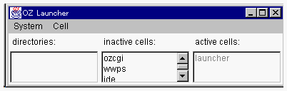

統合開発環境の起動とプロジェクト、サブジェクトの作成
Contents
- ランチャの起動
- OZ IDE の起動
- プロジェクトの作成
- サブジェクトの作成
- クラスの登録

１．ランチャの起動
統合開発環境OZ IDEを起動するために、まず、ランチャを起動しましょう。ランチャはグローバルオブジェクトの生成と活性化を統合的に行う機能を持つツールです。
ランチャを起動するためには、コマンドプロンプトから以下のコマンドを入力します。
ランチャの起動 
> oz launcher
Logging file F:\oz\logs\dorothy01090.log
|

ランチャの active cells: リストには、現在活性化されているグローバルオブジェクトがリストされています。inactive
cells:リストには、現在不活性のグローバルオブジェクトがリストされています。
２．OZ IDE の起動
OZ IDE のグローバルオブジェクト名は、ide です。inactive
cells:リストに存在する ide をダブルクリックしてください。OZ IDE
が起動されます。（起動に時間がかかることがあります） OZ IDEが起動されると、プロジェクトマネージャとスクールブラウザの2つのウィンドウが表示されます。
３．プロジェクトの作成
プロジェクトとは、ある目的を持ったアプリケーションやクラスライブラリを作成するためのリソースの管理単位のことです。
まず、Helloウィンドウを表示するアプリケーションを構築するという目的を持つプロジェクトを作成しましょう。プロジェクトを作成するためには、プロジェクトマネージャを使用します。

まず、Project メニューの new を選択すると、新規プロジェクト名を入力するダイアログ（NEW
PROJECT DIALOG）が表示されますから、そこでプロジェクト名を入力してください。プロジェクト名は任意です。ただし、同一プロジェクトマネージャ内でユニークである必要があります。ここではMyProjとしましょう。

(このダイアログでMyProjと入力してください)
OZシステムでは、プロジェクトは1つのディレクトリに対応づけられます。いま作成したプロジェクトと対応するディレクトリを指定します。プロジェクトマネージャのEdit
メニューから set directory... を選択してください。、ディレクトリ選択ウィンドウが開きマシからそこでディレクトリを指定します。ここでは、環境変数OZHOME/user/sample
を指定しましょう。クリックするとそのディレクトリが選択され、文字が反転します。ウィンドウ下部の
set dir ボタンを押下してください。

このウィンドウで$OZHOME/user/sampleを選択してください。
ディレクトリをクリックすると、そのディレクトリが選択されます
ダブルクリックするとそのディレクトリが開かれます。
.oz ファイルを含むディレクトリを開くと、右にそのファイルが表示されます。
プロジェクトマネージャのタイトルが「MyProj」、Project Directoryエリアに$OZHOME/user/sample（$OZHOME
には環境変数OZHOMEの値が入ります。）、Project Files:リストに Test.oz、Quit.oz、MyDialog.oz
が表示されていると、プロジェクトの作成は成功です。
４．サブジェクトの作成
次に、Helloウィンドウアプリケーションのコンパイルに必要な情報をOZ IDEの中にを作成しましょう。
しかし、その前に、OZ IDEで登場するサブジェクトという概念を説明します。
OZシステムはアプリケーションをサブジェクト単位でリリース、配布することができます。たとえば、これから説明するHelloウィンドウを表示するアプリケーションは、13個のクラスから構成されます。
|
・Test |
・MyDialog |
・Quit |
|
|
|
・ActionEvent |
・ActionListener |
・BorderLayout |
・Button |
・EventDispatchingQueue |
|
・FlowLayout |
・Font |
・Frame |
・Label |
・Panel |
しかし、最初の3つ以外は、標準クラスライブラリとして提供されています。これから作成するアプリケーションを利用者のかたに使用していただくときに、標準クラスライブラリのクラスまで配布してしまうと効率的ではありません。ここで作成する新しい3つのクラスだけを配布することのほうが望ましいことでしょう。他のライブラリやツールを利用すると正しく稼動するクラス群をサブジェクトという単位で管理します。
では、サブジェクトを作成しましょう。サブジェクトの作成はスクールブラウザで行います。
- スクールブラウザの School メニューの add subject... を選択してください。サブジェクト名を入力するダイアログが表示されるので、サブジェクト名を入力します。サブジェクト名は任意です。ただし、そのスクールブラウザ内でユニークである必要があります。ここでは、「mydialog」という名前のサブジェクトを登録することにしましょう。
（このダイアログでmydialogと入力してください）
５．クラスの登録
次に、サブジェクトとクラスを結び付けます。すなわち、サブジェクトにその管理対象であるクラスを登録します。
スクールブラウザのSchool メニューから add class を選択することによってクラスの登録を行うことができますが、ここでは用意されているスクールファイル
test.s をインポートしてmydialogサブジェクトに3つのクラスを登録します。
手順を説明します。まずクラスを登録するサブジェクトを選択してください。すなわち、Subject:メニュー項目から、mydialog
を選択します。
そして、そこにスクールファイルをインポートします。そのためには、スクールブラウザの
Ｆｉｌｅ メニューから import... を選択します。ファイル選択のダイアログが表示されるので、$OZHOME/user/sample/test.s
を選択してください。
スクールブラウザのLabel：リストに3つのクラス名が表示されます。そのエントリをクリックしてみてください。スクールブラウザの右のInterface
ID:とImplementation ID:に、スクールファイルで指定したクラス識別子（ただし、ドメイン名の省略された識別子）が表示されると、サブジェクトへのクラスの登録は成功です。

以上で、アプリケーションの3つのソースファイルと、サブジェクトのスクールを持つtest.s
の情報を、 OZ IDE と結び付けることができました。
最後に、ソースファイルとサブジェクトの結合を行います。スクールブラウザの
Subject メニューから select subject... を選択してください。スクールブラウザが管理しているサブジェクトが一覧されます。そこから利用サブジェクトを選択してください。

この例では以下のクラスが関係を持ちますが、上段の3つのクラスはmydialogサブジェクトに登録しました。
|
・Test |
・MyDialog |
・Quit |
|
|
|
・ActionEvent |
・ActionListener |
・BorderLayout |
・Button |
・EventDispatchingQueue |
|
・FlowLayout |
・Font |
・Frame |
・Label |
・Panel |
それ以外のクラスは、OZ標準クラスライブラリのクラスです。それはlibサブジェクトで定義されています。
mydialogサブジェクトとlibサブジェクトを選択してください。
これで、コンパイルができる状況になっていますが、コンパイルする前にこのアプリケーションで定義されているクラスを調べてみましょう。
- アプリケーションの構成
- OZ IDE の起動とプロジェクト、サブジェクトの作成

- Testクラス
- MyDialogクラス
- Quitクラス
- OZ IDE を利用したコンパイルとテスト実行
- アプリケーションのスクールファイル
- ランチャを利用するグローバルオブジェクトの生成とその活性化
- OZプログラムのデバック
- リリースパッケージの配布
(c) 1996-1998 IPA, ETL, AT21, FSIABC, FXIS,
InArc, MRI, NUL, SBC, Sharp, TEC, TIS. All rights reserved.